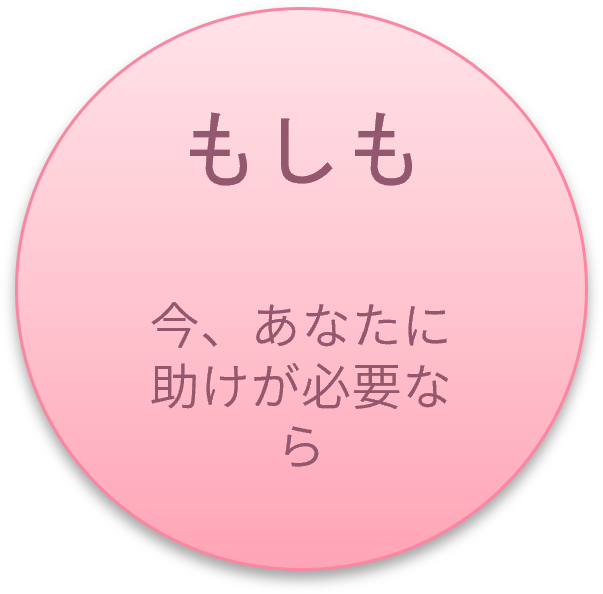

もしも、いまあなたに助けがいるなら
今、周囲で浸水が始まっている、または移動が困難な状況ですか？
あなたの命を守るために、今すぐ以下の行動をとってください。
1. 外への避難が危険な場合（垂直避難）
外の水位が上がっている、夜間で周囲が見えない場合は、無理に外へ出ると命を落とす危険があります。
- 上の階へ移動： 自宅や近くの頑丈な建物の2階以上（できれば3階以上）へ上がってください。
- 斜面から離れる： 土砂崩れの危険があるため、山の斜面とは反対側の部屋に移動してください。
2. 命の危険があり、救助が必要なとき
自力での移動ができず、命の危険が迫っている場合は、迷わず救助を要請してください。
- 消防（119番） または 警察（110番） へ電話をかける。
- 伝えること： 「現在地（住所や目印）」「取り残されている人数」「怪我や病人の有無」「現在の浸水状況」。
- 電話が繋がらないとき：回線が混雑している場合は、スマートフォンの位置情報をオンにした上で、SNS（XやLINEなど）で「#救助」のハッシュタグをつけて現在地と状況を投稿してください。
3. いま集めるべき最低限の情報
避難のタイミングや安全な場所を確認するために、以下の公式情報を確認してください。
- 現在地の避難情報： 自治体のホームページや防災SNSで、発令されている「警戒レベル」を確認する。
- リアルタイムの危険度： 気象庁 キキクル（浸水・洪水・土砂災害の危険度分布）で周囲のリスクを把握する。
- 雨雲と河川の状況： 国土交通省の川の防災情報で、近くの川の水位を確認する。
4. 絶対にやってはいけないNG行動
- 冠水した道路を歩かない： 水面下にあるマンホールの蓋が外れていたり、側溝に落ちたりする危険があります。
- 車での移動・避難： 車のタイヤが半分浸水すると動かなくなり、ドアも開かなくなって閉じ込められます。
- 様子を見に行かない： 田んぼや用水路、川の様子を見に行く行為は絶対にやめてください。